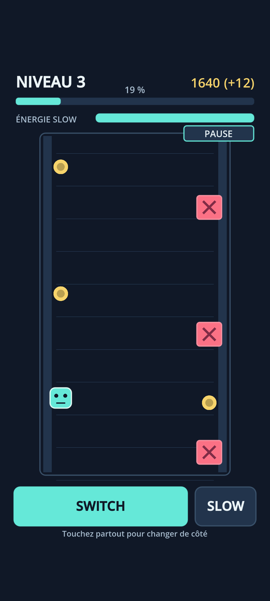
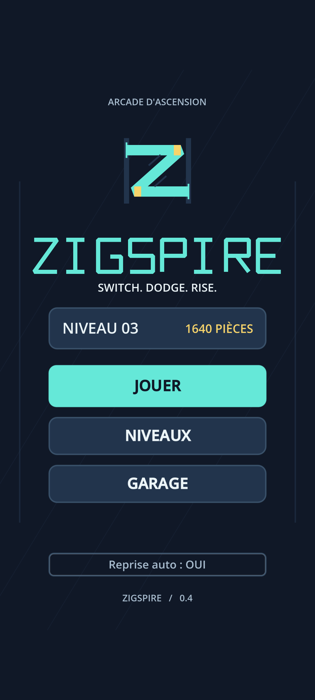
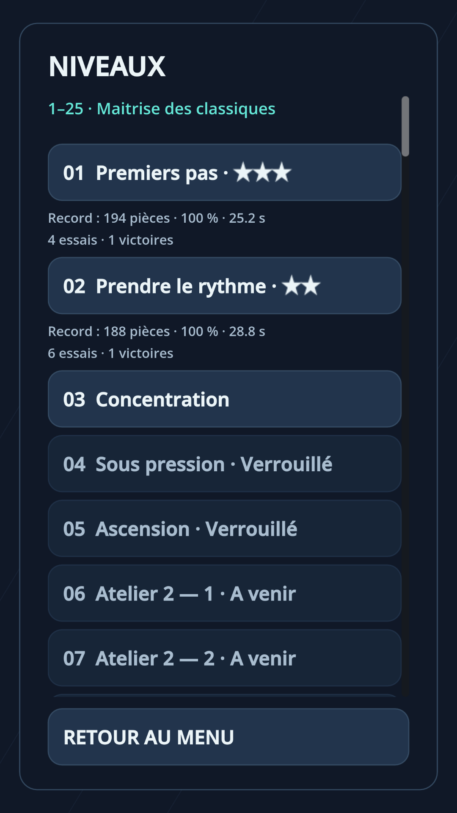
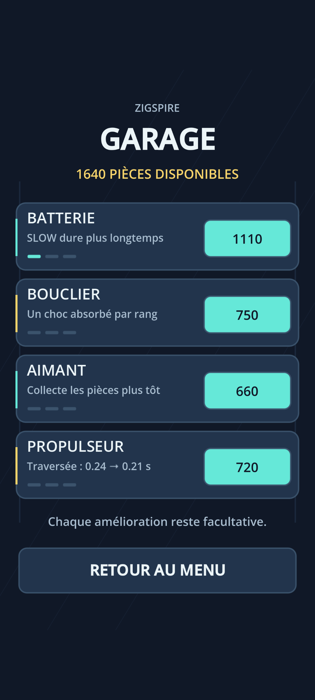

Changez de paroi
Un geste pour passer d'un mur à l'autre et esquiver l'obstacle suivant.
Two walls. One way up.
Stay in motion.
Dans un puits vertical semé d'obstacles, pilotez un petit robot, changez de paroi au bon instant et ralentissez le temps quand chaque fraction de seconde compte.
En cours de développement. La disponibilité sur Google Play sera annoncée ici.

Une mécanique immédiate, une difficulté progressive et l'envie de dépasser son dernier niveau.
Un geste pour passer d'un mur à l'autre et esquiver l'obstacle suivant.
Utilisez votre capacité de ralentissement avec précision lorsque le rythme s'accélère.
Des niveaux variés et des améliorations à débloquer au fil de votre ascension.
Découvrez les véritables écrans de ZIGSPIRE, capturés dans la version de développement Godot.



Captures authentiques : ces images proviennent directement du projet Godot ZIGSPIRE. Elles illustrent une version en développement ; l\u0027interface peut évoluer avant la sortie.